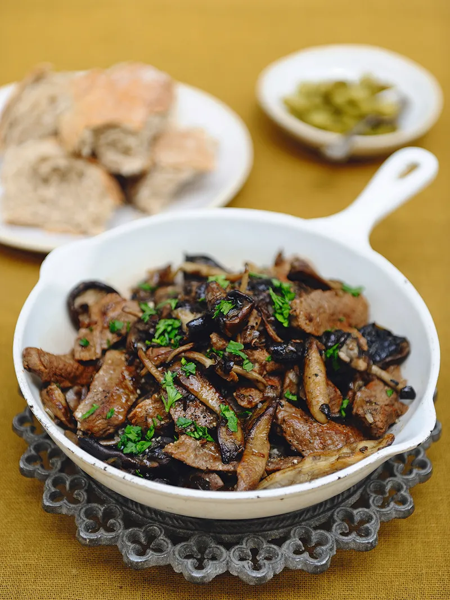

Beef Stroganoff

Description
Originating in Russia (but created by a French chef!), beef stroganoff
is a savory dish characterized by juicy beef and mushrooms coated in a creamy sauce.
It is a warm, hearty meal that is sure to please!
There are a variety of ways to enjoy this homemade beef stroganoff. While our recipe calls
for egg noodles, you could switch things up by substituting a different kind of noodle,
rice or even a potato dish.
Ingredients
- 1.5 pounds beef sirloin steak, 0.5 inch thick
- 8 ounces fresh mushrooms, sliced (2 and 1/2 cups)
- 2 medium onions, thinly sliced
- 1 garlic clove, finely chopped
- 1/4 cup butter
- 1 and 1/2 cups from 1 carton Progresso™ Classic Beef Broth
- 1/2 teaspoon salt
- 1 teaspoon Worcestershire sauce
- 1/4 cup Gold Medal™ All Purpose Flour
- 1 and 1/2 cups sour cream
- 3 cups hot cooked egg noodles
Steps
-
Cut beef across grain into about 0.5 inch strips.
-
Cook mushrooms, onions and garlic in butter in 10-inch skillet over medium heat,
stirring occasionally, until onions are tender; remove from skillet.
-
Cook beef in same skillet until brown. Stir in 1 cup of the broth, the salt and
Worcestershire sauce. Heat to boiling; reduce heat. Cover and simmer 15 minutes.
-
Stir remaining 1/2 cup broth into flour; stir into beef mixture. Add onion mixture;
heat to boiling, stirring constantly. Boil and stir 1 minute. Stir in sour cream;
heat until hot (do not boil). Serve over noodles.